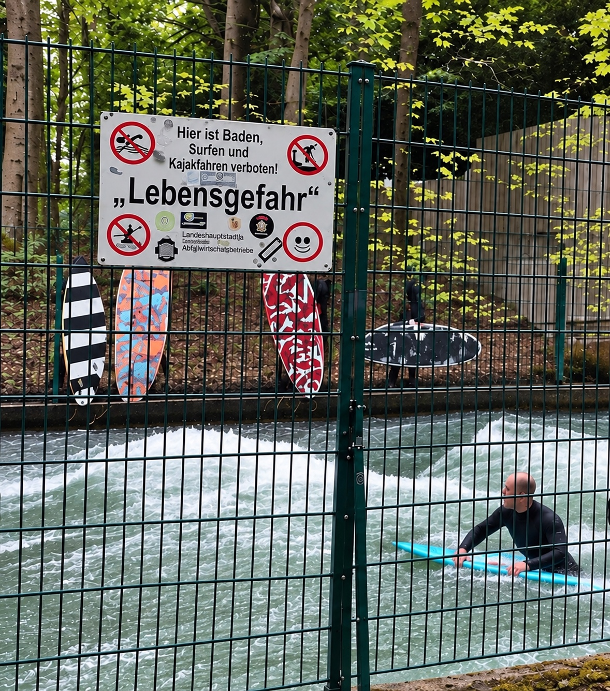

Munich, 2024
A surfer in a wetsuit riding a board in the fast-flowing Eisbach in Munich, with surfboards behind a fence and a German warning sign reading ‘Lebensgefahr’.

A surfer in a wetsuit riding a board in the fast-flowing Eisbach in Munich, with surfboards behind a fence and a German warning sign reading ‘Lebensgefahr’.